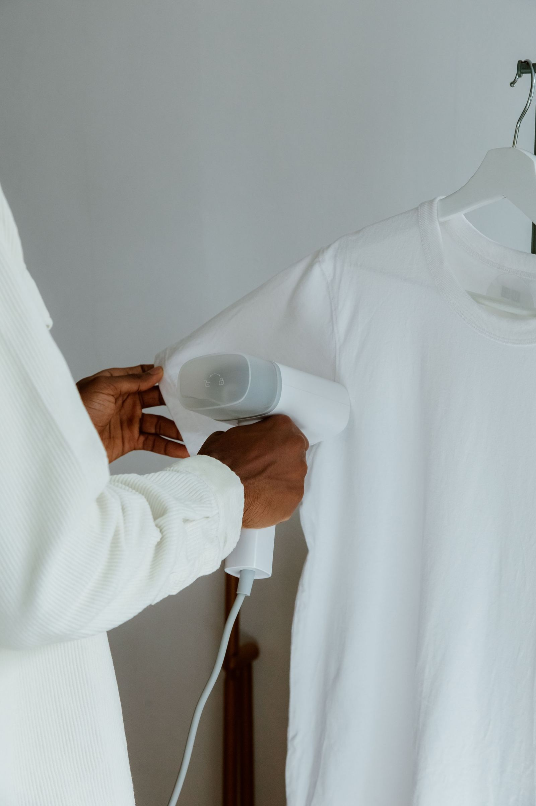
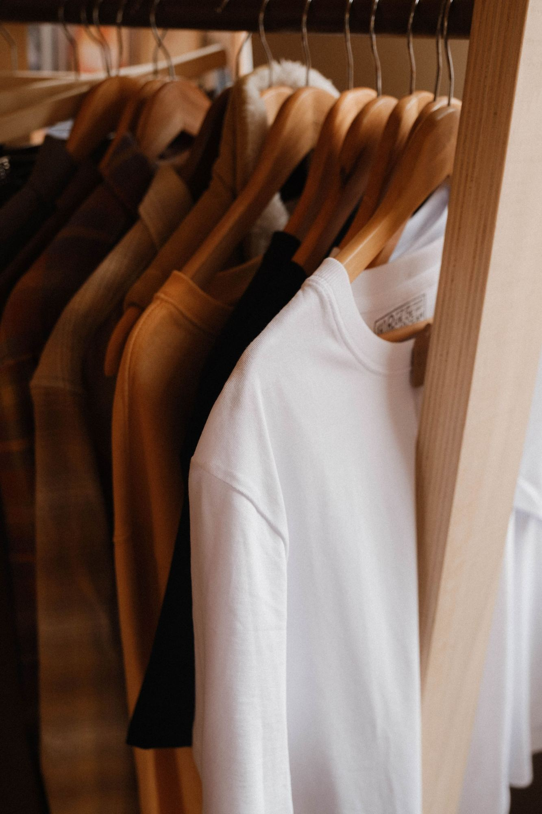
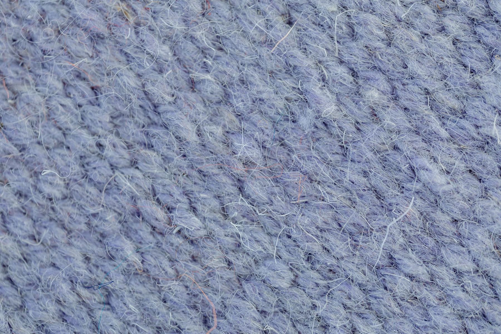
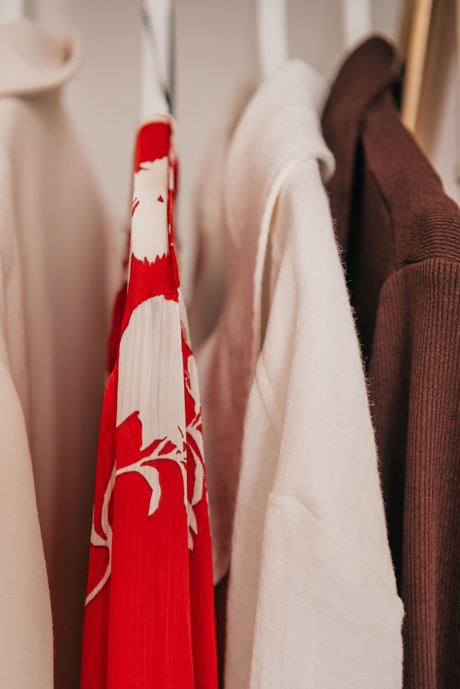
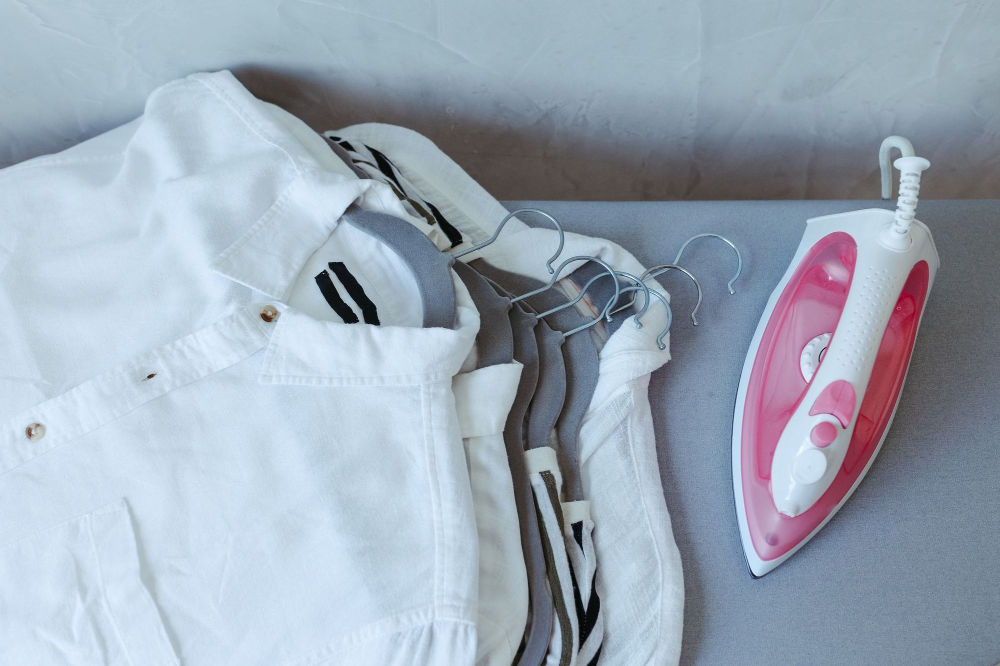

Care That Keeps Your Clothes Looking Their Best.
Professional garment care with attention to the details that matter, from everyday shirts to wedding gowns, at The Village Centre, St Marys.

Your Local Destination for Thoughtful Garment Care.
Tucked into The Village Centre on Charles Hackett Drive, St Marys Village Dry Cleaners is an independently run local business, not a chain. Drop in, hand over a garment, and know it's being looked after by people who are actually there every day.
Drive-up access sits right outside the centre's main entrance, on the northern side, so dropping off and collecting is quick even on a busy day. Most garments are ready same-day or within 24 hours, with an SMS when it's time to collect.
What We Care For
Every service below is part of what we do day to day at The Village Centre, from a single work shirt to a wedding gown that needs to be perfect.

Professional Dry Cleaning
Everyday wear, delicates and formalwear are cleaned using modern dry-cleaning equipment and techniques, restoring garments to a crisp, pressed finish.
Corporate & Work Wear
Business attire, uniforms and everyday workwear, including stubborn stains, handled with the consistency a work wardrobe depends on.


Wedding Dresses & Bridal Gowns
Bridal wear is cleaned and restored with extra care given its detail and sentimental value. Pricing is quoted individually, so bring the gown in for a look.
Alterations & Repairs
Fitting adjustments, hemming, zipper replacements and minor-to-major repairs, for garments that just need to fit a little better.


Suede & Leather Restoration
Specialised tools and methods bring faded or worn leather and suede pieces back to a cared-for condition.
Household Furnishings
Doonas, couch covers, mattress protectors and blankets: the larger household textiles that need a proper clean, not just a home wash.


Airtight Boxing Services
Long-term storage for garments you want to keep in pristine condition, wedding gowns included, sealed away from light, dust and moisture.
How It Works
-
01
Bring In Your Garments
Drop by The Village Centre; drive-up access makes it easy even between errands.
-
02
Discuss What It Needs
Tell us about the garment, any marks or concerns, and what you'd like done.
-
03
Your Garment Is Cared For
Each piece receives the cleaning, pressing, alteration or restoration it needs.
-
04
Collect, Refreshed
Come back and collect your garment, looking its best and ready to wear.

Why People Keep Coming Back
-
Genuinely Local
An independently run shop at The Village Centre, not a drop-box for a depot across town.
-
Drive-Up Convenience
Park right outside the main entrance on the northern side and be in and out quickly.
-
A Broad Range, Done Properly
From everyday shirts to bridal gowns, leather and long-term garment storage: one shop handles it.
-
Rated 5.0 by Local Customers
An 8-review, 5-star record on TrueLocal, earned one garment at a time.
A Closer Look
Licensed photography standing in for our own shop photos, for now. A real gallery of St Marys Village Dry Cleaners is on its way.
Good Garment Care Is in the Details.
Every piece gets the same close attention: checked, treated, pressed and finished by hand before it comes back to you.

What Customers Say
We haven't reproduced individual reviews here, so nothing is paraphrased out of context. Read them in full at the source below.
Read Reviews on TrueLocal ↗Visit or Get in Touch
No online booking yet. The fastest way to reach us is a phone call, an email, or dropping by in person.
-
Phone02 9673 3934
-
Emailgina.vic72@gmail.com
-
Location The Village Centre, Charles Hackett Drive, St Marys NSW 2760. Drive-up access outside the main entrance, northern side. Get Directions ↗
-
Hours Mon – Fri9:00am – 5:30pm Saturday9:00am – 4:00pm Sunday9:00am – 3:00pm
Common Questions
Call 02 9673 3934 or email gina.vic72@gmail.com. You're also welcome to drop by The Village Centre in person during opening hours.
The Village Centre, Charles Hackett Drive, St Marys NSW 2760. We're on the northern side of the centre, outside the main entrance, with drive-up access for easy drop-off and collection.
Monday to Friday 9:00am – 5:30pm, Saturday 9:00am – 4:00pm, and Sunday 9:00am – 3:00pm.
Professional dry cleaning, corporate and work wear, wedding dress and bridal gown cleaning, alterations and repairs, suede and leather restoration, household furnishings such as doonas and couch covers, and airtight boxing for long-term garment storage.
Pricing isn't published online. Bridal and specialty items in particular are quoted individually once we've seen the garment, so call or drop in and we're happy to talk it through.
Our reviews are hosted on TrueLocal ↗, where you're also welcome to leave your own.